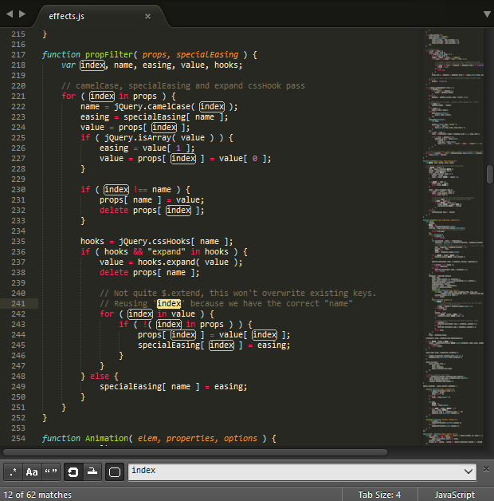

Sublime Text
A sophisticated text editor for code, markup and prose
Télécharger pour Windows
Almost every aspect of Sublime Text can be extended or customized. You can modify the editor’s behavior, add macros and snippets, extend menus and much more. You can even create whole new features using the editor’s API to build complex plugins. Sublime Text’s vast flexibility is the reason why you will learn about so many configuration files: there simply must be a place to specify all available preferences and settings. Configuration files in Sublime Text are text files that conform to a predefined structure or format: JSON predominates, but you’ll find XML files too. For the more advanced extensibility options, Python source code files are used. In this guide, for brevity, we sometimes refer collectively to all these disparate configuration files as resources. Sublime Text will look for resources inside the packages folder. We’ll talk at length about packages later, but the short version is that, to keep things tidy, Sublime Text has a notion of a package, that is, a folder (or zip archive) that contains resources that belong together (maybe they help compose emails faster, write HTML efficiently, enhance the coding experience for C, Ruby, Go…).